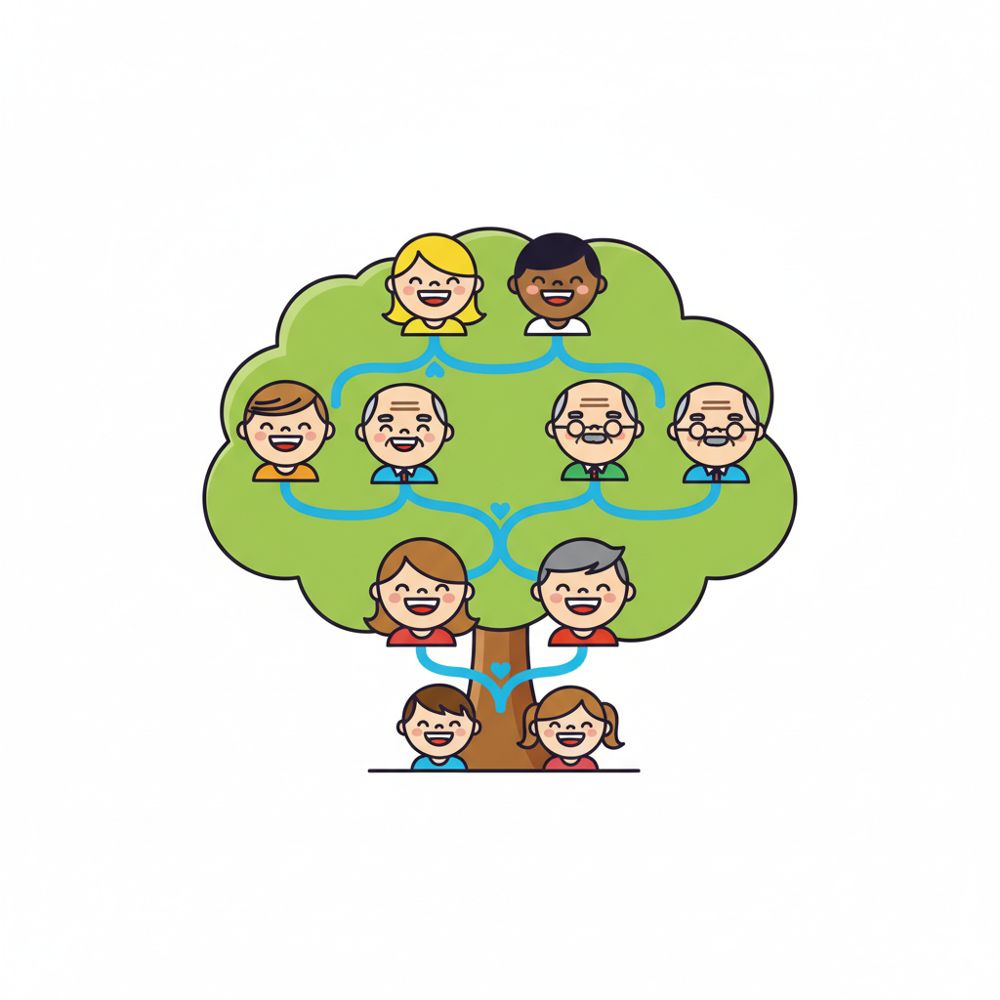
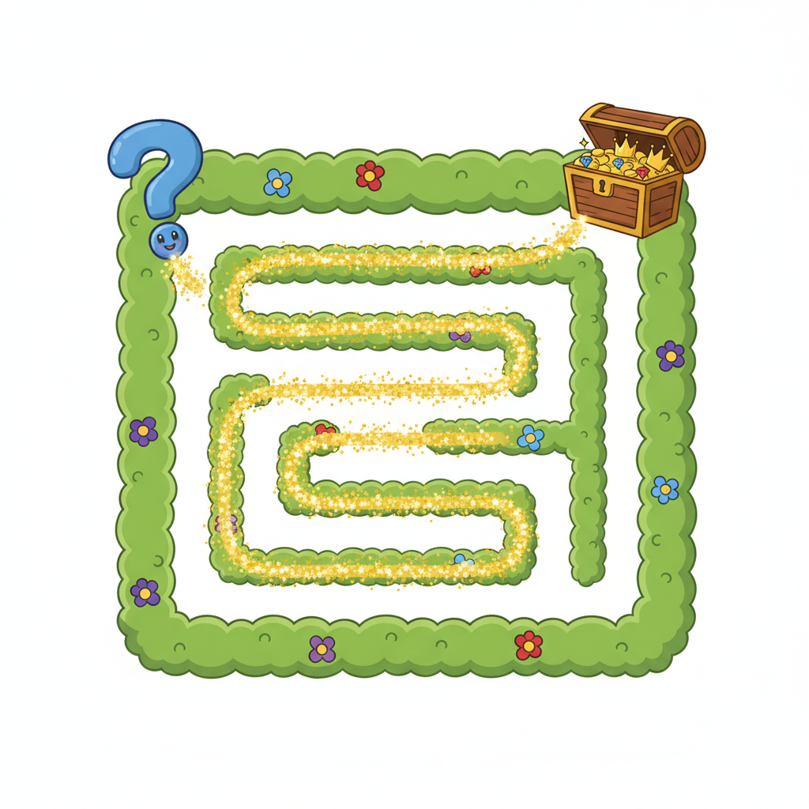

Datalog is a tiny logic language. You describe the world with relations and ask questions.
parent(tom, bob).No functions. No mutation. No side effects. Everything is a relation, and the engine figures out the rest.
We start with four base facts about a family:
parent(tom, bob). parent(bob, carol). parent(carol, dave).
Then we define ancestor with two rules — one base case, one recursive:
ancestor(X, Y) :- parent(X, Y). ancestor(X, Y) :- parent(X, Z), ancestor(Z, Y).
:- reads as "if". Commas mean and. Variables are uppercase, constants lowercase.
Bottom-up evaluation: start with base facts, apply every rule, repeat until nothing new appears.
| Round | New ancestor facts |
|---|---|
| 0 | (base facts only) |
| 1 | tom→bob, bob→carol, carol→dave |
| 2 | tom→carol, bob→dave |
| 3 | tom→dave |
| 4 | — nothing new. Done. |
Three rounds closed the chain. The engine stops when a round adds zero new tuples — that's the fixpoint.
Fixpoint is elegant. It also computes everything.
Per round, per rule: O(n) at best. A badly-ordered join — scanning a big relation before a small one — goes O(n²) or worse. Intermediate state explodes. The planner hits its cap. The fixpoint blows up.
cap-hit. The engine gave up before reaching fixpoint because the intermediate relation sizes exceeded its budget.Don't compute all ancestors. Compute only the ancestors of the thing you asked about.
Magic Sets is a source-to-source rewrite that injects a demand predicate — a "magic" relation — that seeds evaluation from the query goal and propagates downward.
% original query ?- ancestor(tom, Y). % magic seed magic_ancestor(tom).
Now every rule body carries the magic filter. Tuples that don't match the demand are never derived.
Each original rule becomes two rules: one that propagates demand, one that derives tuples — gated by the demand.
% original recursive rule ancestor(X, Y) :- parent(X, Z), ancestor(Z, Y). % after magic rewrite magic_ancestor(Z) :- magic_ancestor(X), parent(X, Z). ancestor(X, Y) :- magic_ancestor(X), parent(X, Z), ancestor(Z, Y).
magic_ancestor for every reachable recursion frontier.
Magic Sets is not magic-magic. Two well-known failure modes:
A or B in a rule body gets split into two rules. The planner propagates demand through each independently — and may reach only one branch. The other branch scans the full relation unfiltered.Do:
Don't expect it to save you from:
MayResolveTo on a monorepo touches nearly everything; demand doesn't prune what's genuinely reachable.